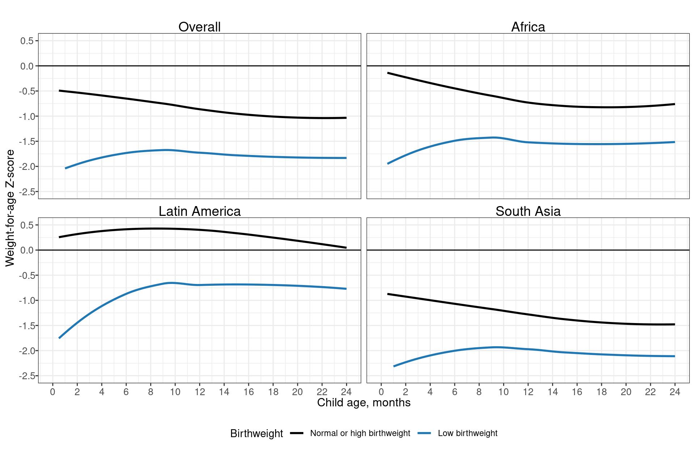
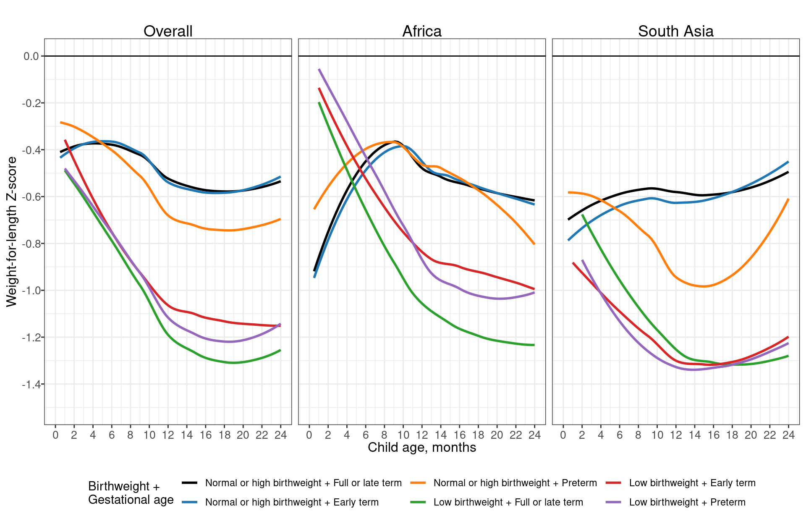
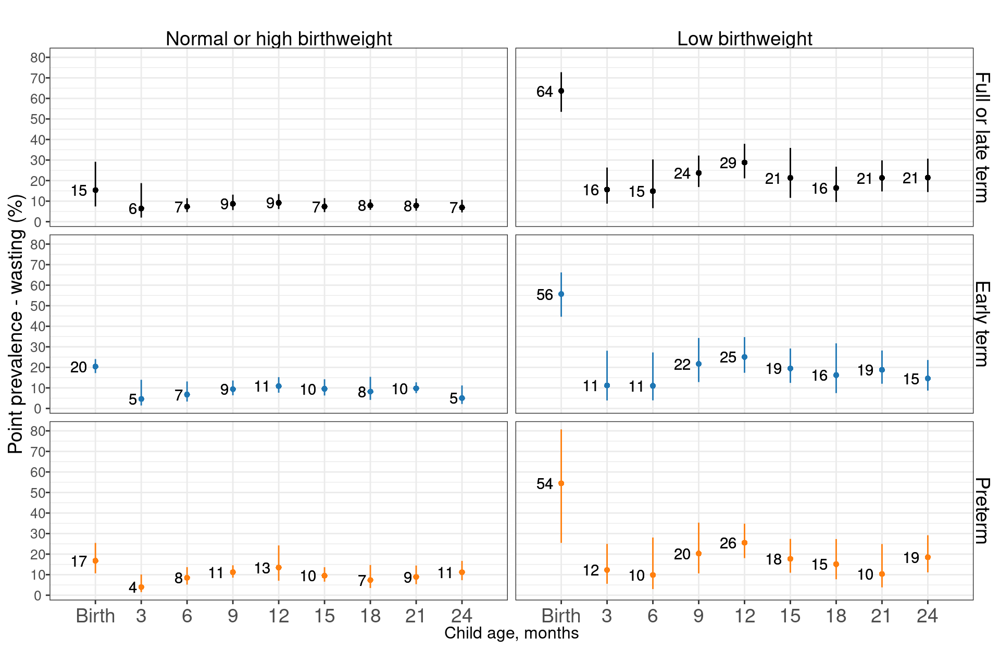
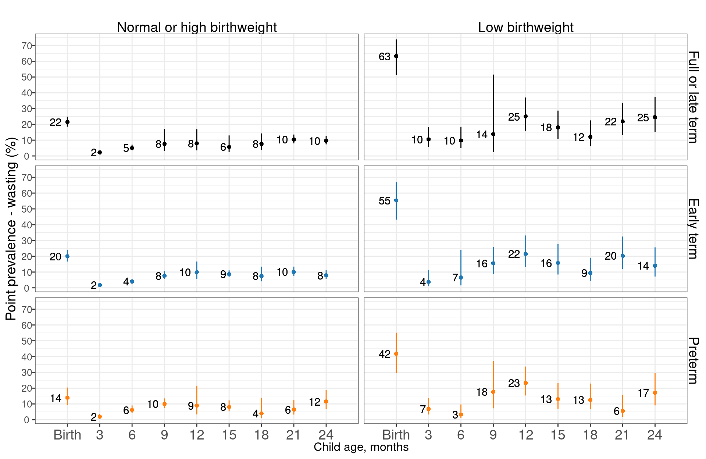
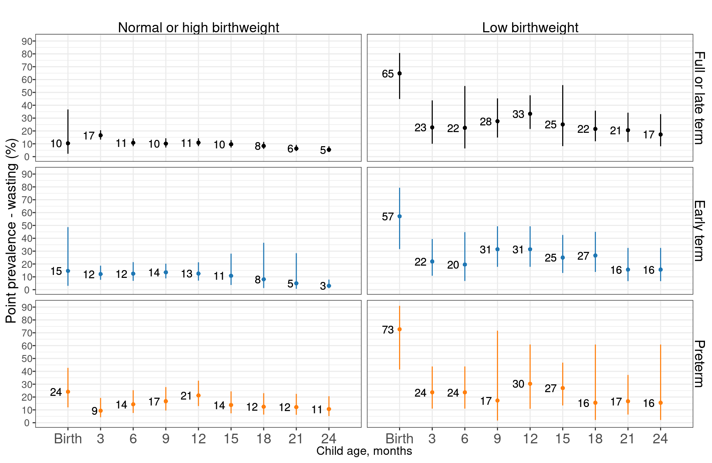

Chapter 9 Child wasting and underweight stratified by low birthweight and preterm birth status
9.1 Weight-for-age Z-score (WAZ)


9.2 Weight-for-length Z-score (WLZ)



9.3 Age-specific prevalence of wasting, stratified by birthweight

9.4 Age-specific prevalence of wasting, stratified by gestational age

9.5 Age-specific prevalence of wasting, stratified by birthweight and gestational age
9.5.0.1 Overall

9.5.0.2 African cohorts

9.5.0.3 South Asian cohorts

9.6 Age-specific prevalence of underweight, stratified by birthweight

9.7 Age-specific prevalence of underweight, stratified by gestational age

9.8 Age-specific prevalence of underweight, stratified by birthweight and gestational age
9.8.0.1 Overall

9.8.0.2 African cohorts

9.8.0.3 South Asian cohorts